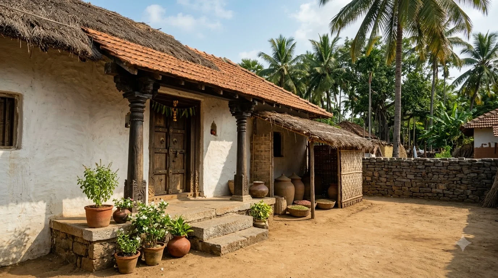
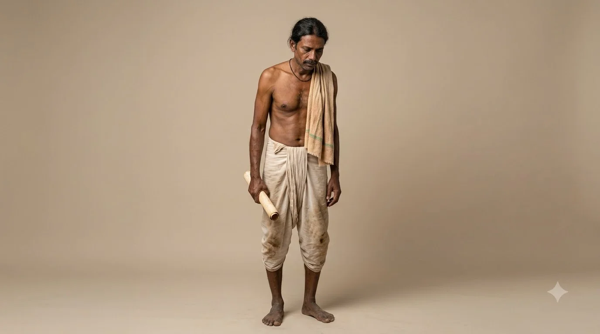
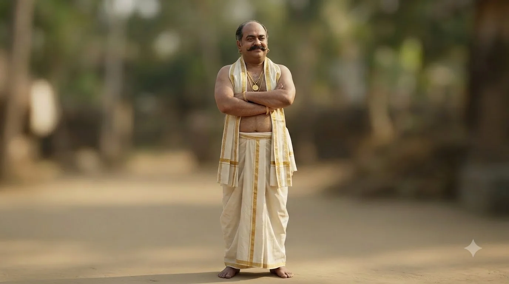
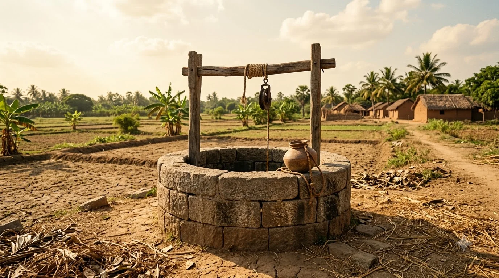
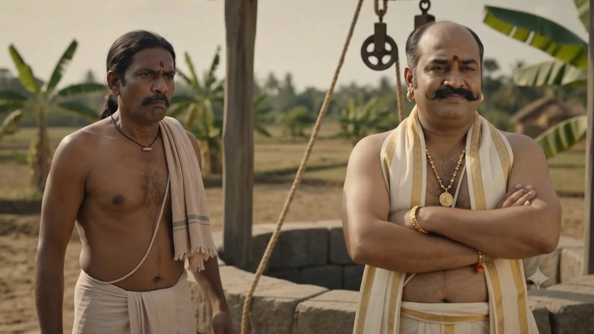
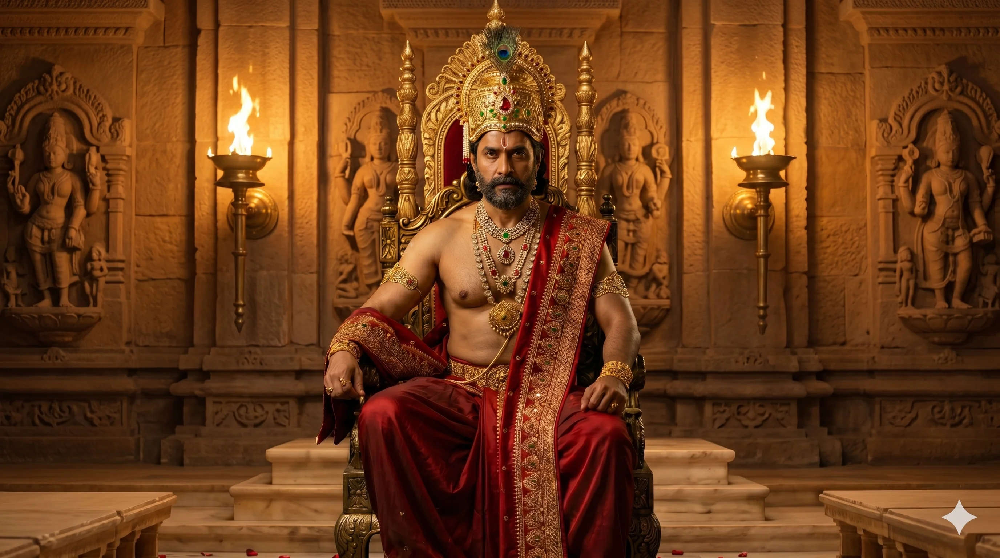

విజయనగర సామ్రాజ్యంలోని ఓ గ్రామంలో భూపతి అనే ధనవంతుడు ఉండేవాడు — వంద ఎకరాలకు పైగా భూములున్నా, అత్యాశ మాత్రం అతనిని ఎప్పుడూ విడిచిపెట్టేది కాదు. తన చిన్న పొలానికి నీరు అందించాలనే ఆశతో రామయ్య అనే పేద రైతు తన జీవితాంతం కూడబెట్టిన సొమ్మంతా ఇచ్చి భూపతి నుంచి ఒక బావిని కొంటాడు. కానీ మరుసటి రోజు భూపతి ఒక వింత వాదన లేవనెత్తుతాడు — "నేను అమ్మింది బావిని మాత్రమే, అందులోని నీళ్లను కాదు!" ఈ వివాదం చివరికి తెనాలి రామకృష్ణ ఉన్న విజయనగర రాజసభకు చేరుతుంది. భూపతి వాదననే అతనికి వ్యతిరేకంగా తిప్పి, ఒక్క తెలివైన తీర్పుతో న్యాయం చేసిన తెనాలి చతురత ఈ కథలో మీకు కనిపిస్తుంది.
A greedy landlord sells a well to a poor farmer — then claims he only sold the well, not the water inside it! When the dispute reaches the royal court, Tenali Rama turns the landlord's own twisted logic against him with one brilliantly simple verdict.
గ్రామంలో అత్యాశపరుడైన భూపతి
Bhupathi — The Wealthy but Greedy Landlord of the Village
విజయనగర సామ్రాజ్యంలోని ఓ గ్రామంలో భూపతి అనే ధనవంతుడు ఉండేవాడు. వంద ఎకరాలకు పైగా భూములున్నా, అత్యాశ మాత్రం అతనిని ఎప్పుడూ విడిచిపెట్టేది కాదు. లాభం కోసం ఎలాంటి ఎత్తుగడనైనా వేయడానికి వెనుకాడేవాడు కాదు.
In a village of the Vijayanagara empire lived Bhupathi, a wealthy landlord. Though he owned over a hundred acres of land, greed never left his side — he would try any trick to squeeze out a little more profit.
రామయ్య చిన్న కల — ఒక బావి
Ramayya's Small Dream — A Well of His Own
అదే గ్రామంలో రామయ్య అనే ఓ పేద రైతు ఉండేవాడు. తన చిన్న పొలానికి నీరు అందించాలనే ఆశతో, భూపతికి చెందిన ఓ బావిని కొనాలని నిర్ణయించుకున్నాడు. ఒకరోజు ధైర్యం చేసి భూపతి ఇంటికి వెళ్లాడు.
In the same village lived Ramayya, a poor farmer. Hoping to bring water to his small field, he decided to buy a well from Bhupathi. One day, gathering his courage, he went to Bhupathi's house.
బావి బేరం — జీవితాంతం సొమ్ముతో ఒప్పందం
The Deal — A Lifetime's Savings for a Well
భూపతి చిరునవ్వుతో ఒప్పుకున్నాడు. భూపతి చెప్పిన ధరకు రామయ్య తన జీవితాంతం కూడబెట్టిన సొమ్మంతా చెల్లించాడు. గ్రామ పెద్దల సమక్షంలో బావి అమ్మకం పూర్తయింది — బావి ఇప్పుడు రామయ్య సొంతమైంది.
Bhupathi agreed with a smile. Ramayya paid the full price — every coin he had saved in his lifetime. In the presence of the village elders, the sale was completed — the well now belonged to Ramayya.
రామయ్య ఆనందంగా బావిని చూస్తాడు. భూపతి మాత్రం చిరునవ్వుతో అతడిని గమనిస్తుంటాడు — ఆ నవ్వు వెనుక ఏదో దాగివుంది.
Ramayya looked at his new well with joy. But Bhupathi watched him with a quiet smile — a smile that hid something else entirely.
"నీళ్లు తీసుకోకు!" — అసలు వివాదం మొదలు
"Don't Take the Water!" — The Real Dispute Begins
మరుసటి ఉదయం రామయ్య ఆనందంగా బావి దగ్గరకు వచ్చాడు. పొలానికి నీళ్లు తోడుకోవడానికి బిందెను బావిలోకి వదిలాడు. అంతలో వెనుక నుంచి ఒక గంభీరమైన స్వరం వినిపించింది.
The next morning, Ramayya arrived at the well full of joy, lowering his pot to draw water for his field. Suddenly, a booming voice rang out from behind him.
రామయ్య ఆశ్చర్యంగా వెనక్కి తిరిగి చూశాడు. "బావి నాదైతే… అందులోని నీళ్లు కూడా నావే కదా!" అన్నాడు. కానీ భూపతి తన బిందెను లాక్కున్నాడు.
Ramayya turned back in shock. "If the well is mine... surely the water inside is mine too!" he said. But Bhupathi snatched the pot from his hands.
గ్రామ పెద్దల ముందు తీర్చలేని వాదన
A Dispute No Village Elder Could Settle
భూపతి మాటలకు రామయ్య నిర్ఘాంతపోయాడు. గ్రామ పెద్దలను ఆశ్రయించినా, ఎవరూ ఈ విచిత్రమైన వాదనకు తీర్పు చెప్పలేకపోయారు. చివరికి ఆ వివాదం విజయనగర రాజసభకు చేరింది.
Ramayya stood stunned. He turned to the village elders, but none could settle this strange argument. In the end, the dispute reached the royal court of Vijayanagara.
రాజసభలో విచారణ
The Hearing Before the Royal Court
భూపతి, రామయ్య ఇద్దరూ శ్రీకృష్ణదేవరాయల ముందు నిలబడ్డారు. భూపతి ఆత్మవిశ్వాసంగా తన వాదన వినిపించాడు — తాను అమ్మింది బావిని మాత్రమేనని, నీళ్లను కాదని.
Both Bhupathi and Ramayya stood before King Krishnadevaraya. Bhupathi confidently repeated his argument — that he had sold only the well, never the water.
సభ మొత్తం నిశ్శబ్దంగా మారింది. అప్పుడే సభలో కూర్చున్న తెనాలి రామకృష్ణుడు చిరునవ్వుతో లేచి నిలబడ్డాడు.
The entire court fell silent. It was then that Tenali Ramakrishna, seated among them, rose with a quiet smile.
తెనాలి వేసిన ఉచ్చు — అద్దె తీర్పు
Tenali's Trap — The Verdict of Rent
తెనాలి భూపతి వైపు చూసి చిరునవ్వు నవ్వాడు. "భూపతి… నువ్వు చెప్పింది నిజమేనా? ఒక్కసారి ఆలోచించి సమాధానం చెప్పు" అన్నాడు ప్రశాంతంగా. భూపతి గర్వంగా అవుననే చెప్పాడు.
Tenali turned to Bhupathi with a smile. "Bhupathi... is what you say truly your final answer? Think carefully before you speak," he said calmly. Bhupathi, still proud, insisted it was.
భూపతి ఆశ్చర్యంతో "ఏంటి… అద్దెనా?" అని అడిగాడు. సభలో అందరూ భూపతి ముఖం చూశారు.
Bhupathi's eyes widened in shock. "What... rent?" The whole court turned to watch his face change.
సభలో చిరునవ్వులు విరిశాయి. కొంతమంది సభికులు తెనాలి తెలివిని మెచ్చుకుంటూ చప్పట్లు కొట్టారు. భూపతి ఒక్కసారిగా భయపడి మోకాళ్లపై కూలబడ్డాడు.
Smiles broke out across the court. Some clapped in admiration of Tenali's wit. Bhupathi, gripped by fear, fell to his knees.
భూపతి క్షమాపణ — తీర్పు
Bhupathi's Apology — The Final Verdict
భూపతి చేతులు జోడించి క్షమాపణ కోరాడు — అద్దె చెల్లించలేనని, ఆ నీళ్లపై తనకు ఎలాంటి హక్కూ లేదని, అత్యాశతో రామయ్యను మోసం చేయాలని ప్రయత్నించానని ఒప్పుకున్నాడు.
Bhupathi folded his hands and begged forgiveness — admitting he could never pay such rent, that he had no real claim over the water, and that greed had driven him to deceive Ramayya.
"ధర్మం ముందు ఎలాంటి ఎత్తుగడా నిలవదు" అని తెనాలి చిరునవ్వుతో అన్నాడు. ఆ రోజు భూపతి అత్యాశకు తగిన గుణపాఠం నేర్చుకున్నాడు, రామయ్యకు న్యాయం జరిగింది — తెనాలి రామకృష్ణుడి తెలివికి రాజసభ మొత్తం చప్పట్లతో మార్మోగింది.
"No scheme can stand before dharma," Tenali said with a smile. That day, Bhupathi learned a lesson greed had long owed him, Ramayya received his justice — and once again, the court thundered with applause for Tenali's wit.
అత్యాశతో వేసిన ఉచ్చు చివరికి అత్యాశపరుడినే బంధిస్తుంది.
The trap laid out of greed ultimately ensnares the greedy one himself.
ఇతరులను మోసం చేయాలని ఎత్తుగడలు వేసేవారు, తమ మాటల్లోనే చిక్కుకుపోతారు. నిజమైన న్యాయం ఎప్పుడూ తెలివైన, నిజాయితీగల వాదననే గెలిపిస్తుంది — ధర్మం ముందు ఎలాంటి ఎత్తుగడా నిలవదు.
Those who scheme to cheat others eventually trap themselves in their own words. True justice always favors the honest, clever argument — no scheme can stand before dharma.
అత్యాశతో వేసిన ఉచ్చు చివరికి అత్యాశపరుడినే బంధిస్తుంది. ధర్మం ముందు ఎలాంటి ఎత్తుగడా నిలవదు.
A trap laid out of greed ultimately ensnares the greedy one himself — no scheme can stand before dharma.
భూపతి రామయ్యకు బావిని అమ్మి, ఆ తర్వాత తాను అమ్మింది బావిని మాత్రమే, అందులోని నీళ్లను కాదని వింత వాదన చేశాడు — రామయ్యను నీళ్లు తీసుకోనివ్వలేదు.
Bhupathi sold Ramayya a well, then claimed he had only sold the well itself — not the water inside it — and refused to let him draw any.
తెనాలి భూపతి వాదననే అతనికి వ్యతిరేకంగా ఉపయోగించాడు — బావి రామయ్యదైతే, భూపతి తన నీళ్లను ఆ బావిలో ఉంచుకోవాలంటే అద్దె చెల్లించాలని ఆజ్ఞాపించమని రాజును కోరాడు.
Tenali turned Bhupathi's own logic against him — arguing that since the well belonged to Ramayya, Bhupathi must pay rent to store his water in someone else's well.
అవును, ఈ కథ 8+ వయసు పిల్లలకు చాలా అర్థమవుతుంది మరియు నిజాయితీ, తెలివైన న్యాయం గురించి మంచి పాఠం నేర్పిస్తుంది.
Yes, this story is well suited for children aged 8 and above and teaches a strong lesson about honesty and clever justice.
అత్యాశతో ఇతరులను మోసం చేయాలని చూసేవారు తమ మాటల్లోనే చిక్కుకుపోతారు. న్యాయం ఎప్పుడూ తెలివైన, నిజాయితీగల వాదననే గెలిపిస్తుంది.
Those who try to cheat others out of greed often trap themselves with their own words. Justice always favors the honest, clever argument.
తెనాలి రామకృష్ణ కథలు — RayalSabha · @Rayalsabha చానెల్ Subscribe చేయండి
ఇంకా 30 తెనాలి కథలు వస్తున్నాయి!
Subscribe చేయండి — ఒక్క కథ కూడా miss అవ్వకండి.